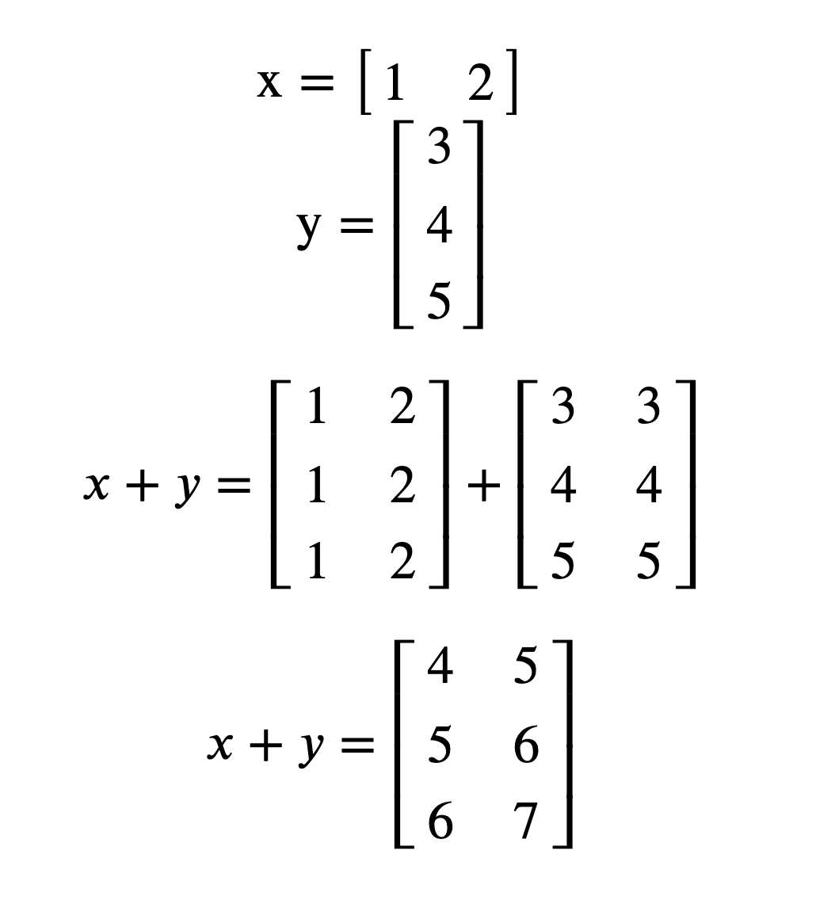

3.4 Advanced NumPy
Contents
3.4 Advanced NumPy#
Estimated time to complete this notebook: 20 minutes
3.4.1 Recap#
In the previous section we introduced numpy array that represents a multidimensional matrix \(M_{i,j,k...n}\). Which, among other things, allows for vectorised versions of common functions
import numpy as np
3.4.2 Broadcasting#
This is another really powerful feature of NumPy.
By default, array operations are element-by-element:
np.arange(5) * np.arange(5)
array([ 0, 1, 4, 9, 16])
If we multiply arrays with non-matching shapes we get an error:
np.arange(5) * np.arange(6)
---------------------------------------------------------------------------
ValueError Traceback (most recent call last)
Cell In [3], line 1
----> 1 np.arange(5) * np.arange(6)
ValueError: operands could not be broadcast together with shapes (5,) (6,)
np.zeros([2, 3]) * np.zeros([2, 4])
---------------------------------------------------------------------------
ValueError Traceback (most recent call last)
Cell In [4], line 1
----> 1 np.zeros([2, 3]) * np.zeros([2, 4])
ValueError: operands could not be broadcast together with shapes (2,3) (2,4)
m1 = np.arange(100).reshape([10, 10])
m2 = np.arange(100).reshape([10, 5, 2])
m1 + m2
---------------------------------------------------------------------------
ValueError Traceback (most recent call last)
Cell In [7], line 1
----> 1 m1 + m2
ValueError: operands could not be broadcast together with shapes (10,10) (10,5,2)
Arrays must match in all dimensions in order to be compatible:
np.ones([3, 3]) * np.ones([3, 3]) # Note elementwise multiply, *not* matrix multiply.
array([[1., 1., 1.],
[1., 1., 1.],
[1., 1., 1.]])
m3 = np.arange(9).reshape([3, 3])
m3
array([[0, 1, 2],
[3, 4, 5],
[6, 7, 8]])
m4 = np.arange(9, 18).reshape([3, 3])
m4
array([[ 9, 10, 11],
[12, 13, 14],
[15, 16, 17]])
m3 * m4 # Note elementwise multiply, *not* matrix multiply.
array([[ 0, 10, 22],
[ 36, 52, 70],
[ 90, 112, 136]])
Except, that if one array has any Dimension 1, then the data is REPEATED to match the other.
col = np.arange(10).reshape([10, 1])
col
array([[0],
[1],
[2],
[3],
[4],
[5],
[6],
[7],
[8],
[9]])
row = col.transpose()
row
array([[0, 1, 2, 3, 4, 5, 6, 7, 8, 9]])
col.shape # "Column Vector"
(10, 1)
row.shape # "Row Vector"
(1, 10)
row + col
array([[ 0, 1, 2, 3, 4, 5, 6, 7, 8, 9],
[ 1, 2, 3, 4, 5, 6, 7, 8, 9, 10],
[ 2, 3, 4, 5, 6, 7, 8, 9, 10, 11],
[ 3, 4, 5, 6, 7, 8, 9, 10, 11, 12],
[ 4, 5, 6, 7, 8, 9, 10, 11, 12, 13],
[ 5, 6, 7, 8, 9, 10, 11, 12, 13, 14],
[ 6, 7, 8, 9, 10, 11, 12, 13, 14, 15],
[ 7, 8, 9, 10, 11, 12, 13, 14, 15, 16],
[ 8, 9, 10, 11, 12, 13, 14, 15, 16, 17],
[ 9, 10, 11, 12, 13, 14, 15, 16, 17, 18]])
10 * row + col
array([[ 0, 10, 20, 30, 40, 50, 60, 70, 80, 90],
[ 1, 11, 21, 31, 41, 51, 61, 71, 81, 91],
[ 2, 12, 22, 32, 42, 52, 62, 72, 82, 92],
[ 3, 13, 23, 33, 43, 53, 63, 73, 83, 93],
[ 4, 14, 24, 34, 44, 54, 64, 74, 84, 94],
[ 5, 15, 25, 35, 45, 55, 65, 75, 85, 95],
[ 6, 16, 26, 36, 46, 56, 66, 76, 86, 96],
[ 7, 17, 27, 37, 47, 57, 67, 77, 87, 97],
[ 8, 18, 28, 38, 48, 58, 68, 78, 88, 98],
[ 9, 19, 29, 39, 49, 59, 69, 79, 89, 99]])
This works for arrays with more than one unit dimension.
3.4.3 Another example#
x = np.array([1, 2]).reshape(1, 2)
x
array([[1, 2]])
y = np.array([3, 4, 5]).reshape(3, 1)
y
array([[3],
[4],
[5]])
result = x + y
result.shape
(3, 2)
result
array([[4, 5],
[5, 6],
[6, 7]])
What numpy is doing:
3.4.4 Newaxis#
Broadcasting is very powerful, and numpy allows indexing with np.newaxis to temporarily create new one-long dimensions on the fly.
import numpy as np
x = np.arange(10).reshape(2, 5)
y = np.arange(8).reshape(2, 2, 2)
x
array([[0, 1, 2, 3, 4],
[5, 6, 7, 8, 9]])
y
array([[[0, 1],
[2, 3]],
[[4, 5],
[6, 7]]])
x_dash = x[:, :, np.newaxis, np.newaxis]
x_dash.shape
(2, 5, 1, 1)
y_dash = y[:, np.newaxis, :, :]
y_dash.shape
(2, 1, 2, 2)
y_dash
array([[[[0, 1],
[2, 3]]],
[[[4, 5],
[6, 7]]]])
res = x_dash * y_dash
res.shape
(2, 5, 2, 2)
np.sum(res)
830
Note that newaxis works because a \(3 \times 1 \times 3\) array and a \(3 \times 3\) array contain the same data,
differently shaped:
threebythree = np.arange(9).reshape(3, 3)
threebythree
array([[0, 1, 2],
[3, 4, 5],
[6, 7, 8]])
threebythree[:, np.newaxis, :]
array([[[0, 1, 2]],
[[3, 4, 5]],
[[6, 7, 8]]])
3.4.5 Dot Products using broadcasting#
NumPy multiply is element-by-element, not a dot-product:
a = np.arange(9).reshape(3, 3)
a
array([[0, 1, 2],
[3, 4, 5],
[6, 7, 8]])
b = np.arange(3, 12).reshape(3, 3)
b
array([[ 3, 4, 5],
[ 6, 7, 8],
[ 9, 10, 11]])
a * b
array([[ 0, 4, 10],
[18, 28, 40],
[54, 70, 88]])
We can use what we’ve learned about the algebra of broadcasting and newaxis to get a dot-product, (matrix inner product).
First we add new axes to \(A\) and \(B\):
a[:, :, np.newaxis].shape
(3, 3, 1)
b[np.newaxis, :, :].shape
(1, 3, 3)
Now we use broadcasting to generate \(A_{ij}B_{jk}\) as a 3-d matrix:
a[:, :, np.newaxis] * b[np.newaxis, :, :]
array([[[ 0, 0, 0],
[ 6, 7, 8],
[18, 20, 22]],
[[ 9, 12, 15],
[24, 28, 32],
[45, 50, 55]],
[[18, 24, 30],
[42, 49, 56],
[72, 80, 88]]])
Then we sum over the middle, \(j\) axis, [which is the 1-axis of three axes numbered (0,1,2)] of this 3-d matrix. Thus we generate \(\Sigma_j A_{ij}B_{jk}\).
(a[:, :, np.newaxis] * b[np.newaxis, :, :]).sum(1)
array([[ 24, 27, 30],
[ 78, 90, 102],
[132, 153, 174]])
Or if you prefer:
(a.reshape(3, 3, 1) * b.reshape(1, 3, 3)).sum(1)
array([[ 24, 27, 30],
[ 78, 90, 102],
[132, 153, 174]])
We can see that the broadcasting concept gives us a powerful and efficient way to express many linear algebra operations computationally.
3.4.6 Dot Products using numpy functions#
However, as the dot-product is a common operation, numpy has a built in function:
np.dot(a, b)
array([[ 24, 27, 30],
[ 78, 90, 102],
[132, 153, 174]])
This can also be written as:
a.dot(b)
array([[ 24, 27, 30],
[ 78, 90, 102],
[132, 153, 174]])
If you are using Python 3.5 or later, a dedicated matrix multiplication operator has been added, allowing you to do the following:
a @ b
array([[ 24, 27, 30],
[ 78, 90, 102],
[132, 153, 174]])
3.4.7 Record Arrays#
These are a special array structure designed to match the CSV “Record and Field” model. It’s a very different structure from the normal NumPy array, and different fields can contain different datatypes. We saw this when we looked at CSV files:
x = np.arange(50).reshape([10, 5])
record_x = x.view(
dtype={"names": ["col1", "col2", "another", "more", "last"], "formats": [int] * 5}
)
record_x
array([[( 0, 1, 2, 3, 4)],
[( 5, 6, 7, 8, 9)],
[(10, 11, 12, 13, 14)],
[(15, 16, 17, 18, 19)],
[(20, 21, 22, 23, 24)],
[(25, 26, 27, 28, 29)],
[(30, 31, 32, 33, 34)],
[(35, 36, 37, 38, 39)],
[(40, 41, 42, 43, 44)],
[(45, 46, 47, 48, 49)]],
dtype=[('col1', '<i8'), ('col2', '<i8'), ('another', '<i8'), ('more', '<i8'), ('last', '<i8')])
Record arrays can be addressed with field names like they were a dictionary:
record_x["col1"]
array([[ 0],
[ 5],
[10],
[15],
[20],
[25],
[30],
[35],
[40],
[45]])
Indeed we can use these methods when parsing CSV files instead of using Pandas.
3.4.8 Logical arrays, masking, and selection#
Numpy defines operators like == and < to apply to arrays element by element:
x = np.zeros([3, 4])
x
array([[0., 0., 0., 0.],
[0., 0., 0., 0.],
[0., 0., 0., 0.]])
y = np.arange(-1, 2)[:, np.newaxis] * np.arange(-2, 2)[np.newaxis, :]
y
array([[ 2, 1, 0, -1],
[ 0, 0, 0, 0],
[-2, -1, 0, 1]])
iszero = x == y
iszero
array([[False, False, True, False],
[ True, True, True, True],
[False, False, True, False]])
A logical array can be used to select elements from an array:
y[np.logical_not(iszero)]
array([ 2, 1, -1, -2, -1, 1])
Although when printed, this comes out as a flat list, if assigned to, the selected elements of the array are changed!
y[iszero] = 5
y
array([[ 2, 1, 5, -1],
[ 5, 5, 5, 5],
[-2, -1, 5, 1]])
3.4.9 Numpy memory#
Numpy memory management can be tricksy:
x = np.arange(5)
y = x[:]
y[2] = 0
x
array([0, 1, 0, 3, 4])
It does not behave like lists!
x = list(range(5))
y = x[:]
y[2] = 0
x
[0, 1, 2, 3, 4]
We must use np.copy to force separate memory. Otherwise NumPy tries its hardest to make slices be views on data.
Now, this has all been very theoretical, but let’s go through a practical example, and see how powerful NumPy can be.